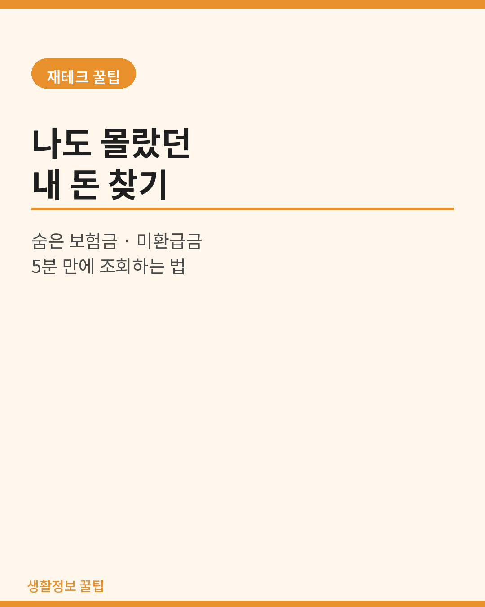
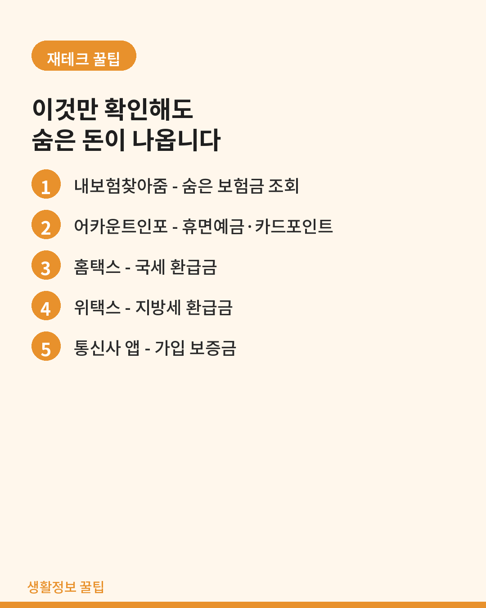
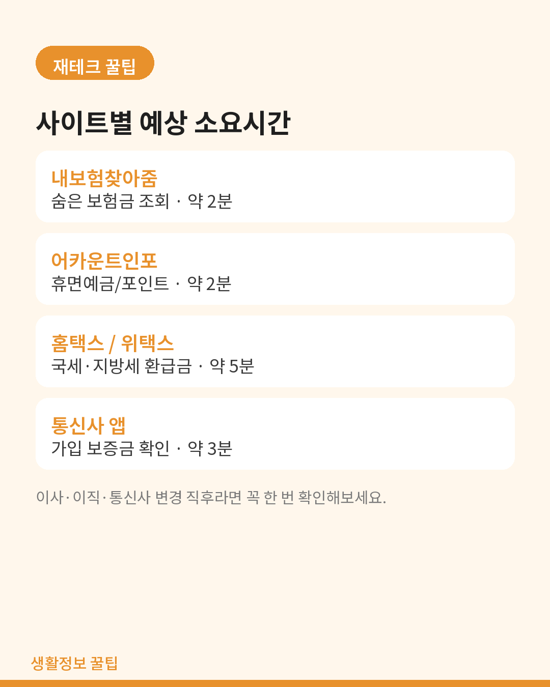
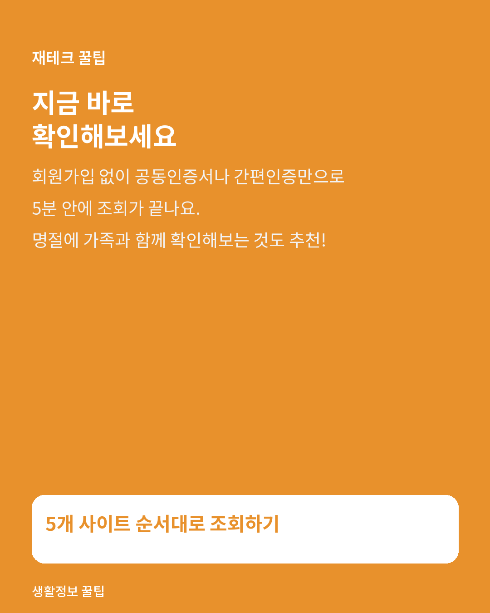

생활정보
나도 몰랐던 내 돈 찾기 — 숨은 보험금·미환급금 5분 만에 조회하는 법
이름도 잊고 있던 보험금, 통신비 보증금, 카드 포인트까지. 조회처별로 순서대로 정리했습니다.

주변에서 숨은 보험금이나 미환급금을 찾았다는 이야기, 한 번쯤 들어보셨을 거예요. 이사를 자주 다니거나, 예전에 가입했던 보험을 잊고 있거나, 통신사를 여러 번 바꾼 분이라면 본인도 모르는 사이에 찾아가지 않은 돈이 쌓여 있을 가능성이 높습니다. 딱 5분이면 끝나는 조회 방법을 순서대로 정리했습니다.

1. 숨은 보험금 — 내보험찾아줌
- 금융감독원 통합연금포털 산하 내보험찾아줌에서 조회합니다.
- 공동인증서 또는 카카오·네이버 등 간편인증으로 로그인합니다.
- 본인 명의로 가입된 전체 보험 계약을 조회한 뒤 만기·중도·휴면 보험금을 확인할 수 있습니다.
- 보험사가 지급 통지를 했지만 계좌 변경 등으로 못 받은 경우가 의외로 많습니다.
부모님 세대는 종신보험을 여러 개 중복 가입한 경우가 많습니다. 명절에 가족이 모였을 때 같이 조회해보는 걸 추천합니다.
2. 휴면예금·계좌 — 어카운트인포
- 계좌정보통합관리서비스(어카운트인포)에서 은행·저축은행·카드사·보험사에 흩어진 계좌를 한 번에 조회합니다.
- 잔액이 일정 금액 이하이고 오래 거래가 없는 휴면계좌는 그 자리에서 해지·환급 신청까지 됩니다.
- 카드 포인트 소멸 예정 내역도 같은 화면에서 확인됩니다.
3. 국세·지방세 미환급금
4. 통신비 보증금·명의 점검
- 통신 3사 해지 시 냈던 가입 보증금을 안 찾아간 경우가 많습니다.
- 각 통신사 고객센터 앱이나 대리점 방문으로 확인할 수 있습니다.
- 명의도용 방지 서비스 엠세이퍼에서 본인 명의 회선도 함께 점검하면 좋습니다.

5. 정리 체크리스트
| 항목 | 사이트 | 소요시간 |
|---|---|---|
| 숨은 보험금 | 내보험찾아줌 | 2분 |
| 휴면예금 · 카드포인트 | 어카운트인포 | 2분 |
| 국세 환급금 | 홈택스 | 3분 |
| 지방세 환급금 | 위택스 | 2분 |
| 통신비 보증금 | 통신사 앱 | 3분 |

마무리
한 번 조회해두면 매년 정기적으로 확인하는 습관을 들이는 게 좋습니다. 특히 이사나 이직, 통신사 변경 직후에는 꼭 체크해보세요.